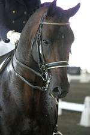

Corcovado is the only approved son in the US of the Elite Holsteiner stallion Coriander out of Caletta VII, a State Premium mare by Königspark XX with the sought after stamm 474A. Coriander was Dressage Horse of the Year in Schleswig-Holstein 1994 and a winner at Grand Prix level. Coriander sired 5 approved sons in Holstein (Germany), 10 States-Premium Mares and the 2004 Second Reserve Champion at the Verband Mare Show in Elmshorn (Germany). Photos and additional information are available on Corcovado's dam and sire page.
Corcovado is currently competing at Intermediare. Although he has shown tremendous ability in dressage his talent for jumping should not be overlooked. While all of his formal training has been in dressage he nonetheless received very high scores for free jumping at the Oldenburg/ISR, RPSI and AWR stallion approvals with an 8, 8 and 9 respectively.
Presented to the Rheinland Pfalz-Saar in 2004, Corcovado was approved with the high score of 61, including a 9 for canter, and 8's for type, conformation, free jumping, and total overall impression & development. The judges were very complimentary of Corcovado's willing temperament, good manners and athleticism.

The Site Champion at his AWR inspection in 2003, Corcovado scored an 8.1 making him a First Premium Premiere with a 9 for jumping and 8's for breed, type and conformation, shoulders and withers, top-line and quarters, front legs, and hind legs, carriage & elasticity, and flatwork under saddle. The judges comments included, "Elegant stallion with fabulous swinging gaits, modern type...Excellent work attitude. "
Corcovado placed 15th in the nation for the USEF Leading Sires for HunterBreeding in 2007.
2010 breeding fee: $1200, $800 reimbursed if mare not in foal. Please view his contract for details. Credit card payment accepted through Paypal. EVA tested negative and vaccinated annually.